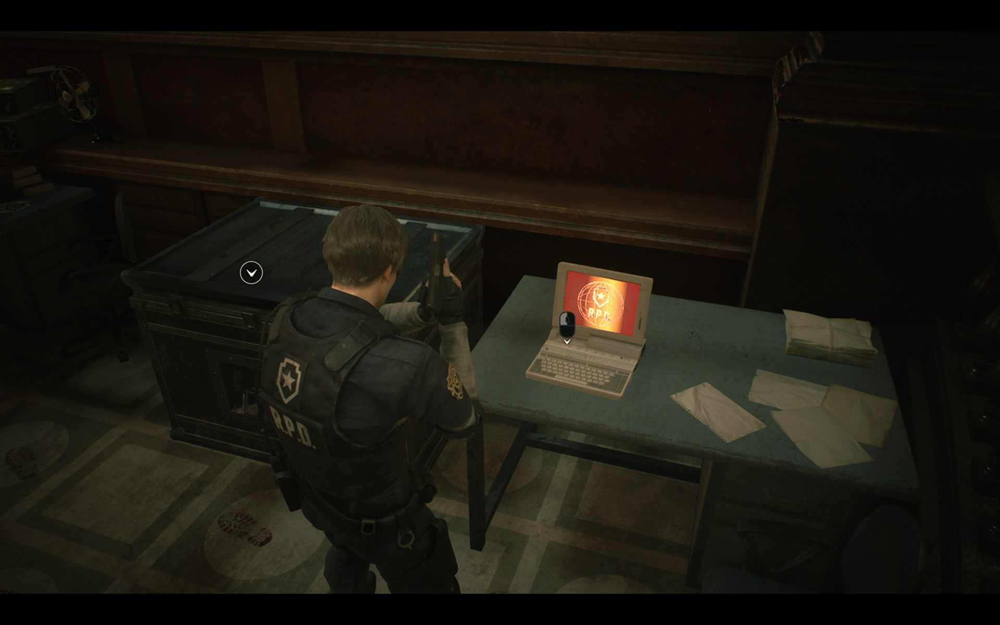

Kawaii Nightmare - Horror De-Horror-fied
Team Members: Angela Marey Rodriguez, Anthea Guo, Jackie Lian, Karina Jin
Link to milestone video: Milestone Video Link
Link to presentation slides: Milestone Presentation Slides
Accomplishment
-
Toon Shading
- Boost the brightness of each pixel in the scene
- Remap all hues into a narrow magenta-violet band while preserving the scene's original shading and structure to simulate a dreamy vibe compared to the original dark scene
- Calculates luminance of each pixel and applied toon-style quantization using a customizable number of levels
- Lifts the dark regions of the scene by lerping the luminance within a higher range
-
Watercolor Shading
- Implemented a custom watercolor shader in Resident Evil 2 using ReShade and cel shading techniques
- Introduced soft blending to simulate the flowing, light quality of watercolor
- Added edge contrast and a paper texture overlay to enhance authenticity
Preliminary Results
Toon Shader:
|  |
Watercolor Shading:

|

|
|

|

|

|

|

|

|

|
Reflections
-
Toon Shading
- We are on track with our plan for this toon shader. The shader is now mostly completed but there are a few more improvements that could be made such as adding edge detection. The scene will look more toon-like with edge detection and maybe we can also apply some rim lighting to the scene.
-
Watercolor Shading
- Hardware limitations slowed progress — only two team members had PCs capable of running both RE2 and ReShade. This resulted in a full day of debugging hardware.
- Learning to apply cel shading also required a learning curve and a lot of debugging. However, the results were extremely satisfying and we hope that they are applicable across platforms.
Schedule
- Week 3: (4/20 - 4/27):
- Finish milestone video demo (4/20).
- Finish both shaders and test them in game scene.
- Start and finish most part of model swapping.
- Week 4: (4/28 - 5/5):
- Draft up and finish writing the final project writeup.
- Prepare the final project presentation.